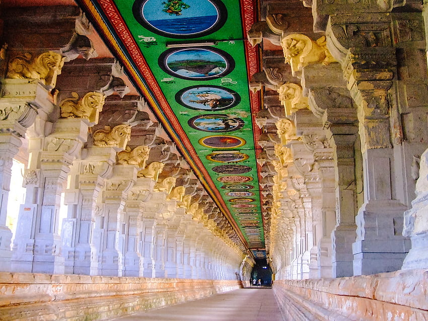
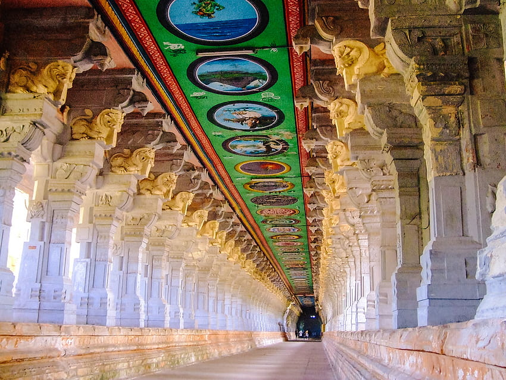

About Ramanathaswamy Temple
The Holy abode of the Hindu God, Shri Ram (addressed so with all respect & humility) is a virtual paradise for the devout. No Hindu’s journey is complete without a pilgrimage to both Varanasi and Rameswaram for the culmination of his quest for salvation and is hallowed by the epic ‘Ramayana’. Folklore mentions about God Ram’s presence in this land, after his 14-year exile.
Local legend has it that Shri Ram was helped back into Rameswaram and into India by his brother Lakshman and Hanuman along with his band of thousands of monkeys, after finally emerging victorious against the demon – Ravana. They helped build a bridge with rocks from the sea and shores to cross the ‘Sethu canal’ and reach Lanka. Lord Rama is also believed to have sanctified this place by worshipping and glorifying Lord Shiva and hence marks the confluence of Shaivism and Vaishnavism and is thus revered by both Shaivites and Vaishnavites alike and thus there is a strong belief that bathing in the 22 ‘Theerthams’ or natural springs is a step forward in enlightenment. Therefore, Rameswaram has rightly been declared as one of the National Pilgrim Centres in the count.
The Ramanathaswamy temple by itself is a delight for every tourist. With its magnificent, imposing structure, long corridors, aesthetically carved pillars, the temple is adorned with a towering 38-metre ‘Gopuram’. The temple itself was built by rulers since the 12th century with Sethupathy Maravar beginning the construction of the grand Ramanathaswamy temple that boasts of the ‘Third Corridor’, completed by his successor, Maravar – the longest one in Asia with a 197-metre span from East to West and a 133-metre span from South to North, the third largest in the world! It is said that Swamy Vivekananda offered prayers at this temple in 1897. It is also one of the twelve Jyothirlinga temples, where Shiva is worshipped in the form of a Jyotirlingam.
The legend behind the temple is associated with Lord Rama from the Indian epic Ramayana. It is believed that Lord Rama, after defeating the demon king Ravana, wanted to worship Lord Shiva as part of atonement. He asks Hanuman to bring him a Linga from Kashi. When Hanuman delayed his return, Goddess Sita made a Shivalinga using sand so that Rama could offer his prayers. It is believed that the self-same Shiva Linga, known as Ramalingam, is now worshipped at the Ramanathaswamy temple. The lingam brought by Hanuman from Kailash is called Vishwalingam.
To fill the Trip Booking Form Click Here.
For more detailed information, you can visit Wikipedia.